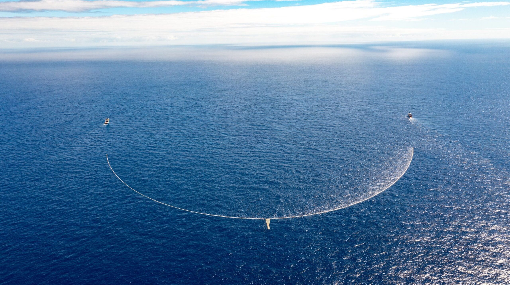
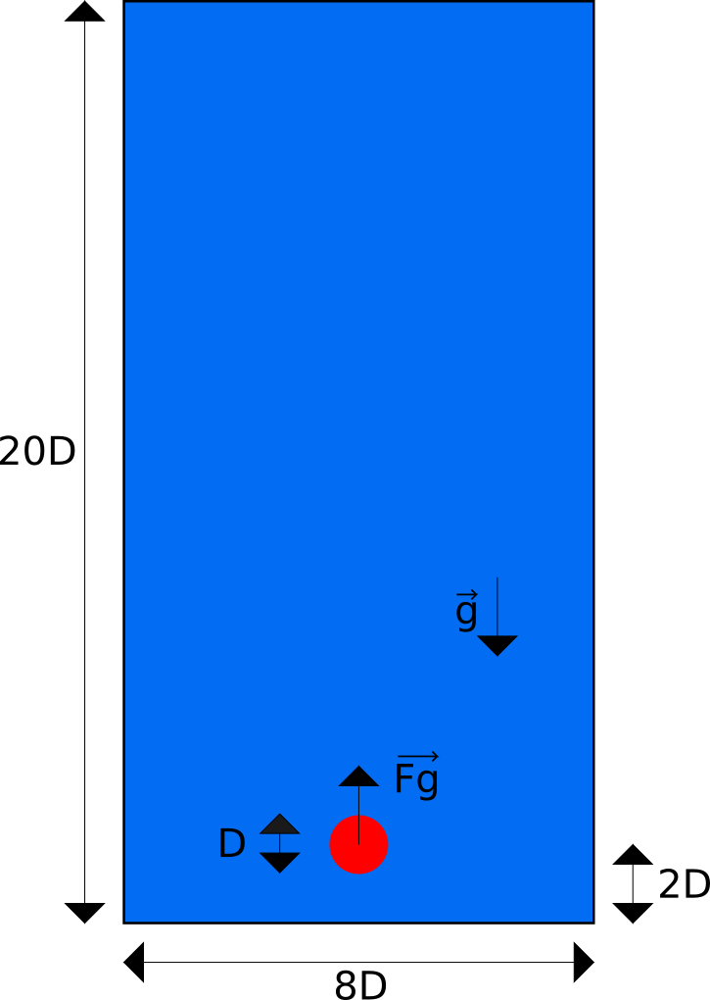
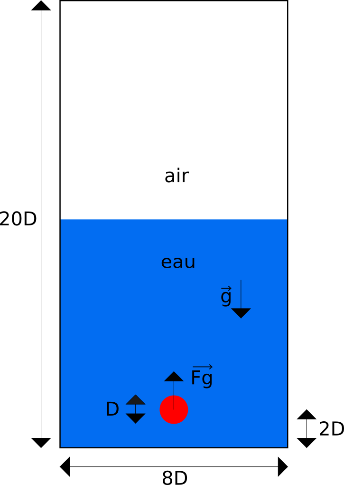

Stage de Master 2
Simulation numérique directe de la dynamique des plastiques en intéraction avec la vague de Stokes
2026-05-11
Contexte
- Production accrue de plastiques depuis les années 1950
- Pollution marine majeure : 4-12 millions de tonnes de plastique/an
- Danger pour la faune et les écosystèmes marins


Cas d’étude
Cas 1 : Ascension d’un cylindre initialement immergé dans de l’eau.
Cas 2 : Ascension d’un cylindre initialement immergé dans de l’eau, en présence d’une interface libre plane.
Cas 3 : Ascension d’un cylindre initialement immergé dans de l’eau, en présence d’une vague de Stokes à l’interface.



Etude du cas 3 : ajout d’une vague de Stokes
Cas 3 : Ascension d’un cylindre initialement immergé dans de l’eau, en présence d’une vague de Stokes à l’interface.
Nombres adimensionnels du problème :
\[\color{red}{ \Pi_1 = \frac{\rho_{\text{solide}}}{\rho_{\text{eau}}}=m \\ \Pi_2=\frac{U}{\sqrt{Dg}}=F_r \\ \Pi_3=\frac{\sqrt{(1-m)gD^3}}{\nu_f}=G_a} \\ \color{blue}{\Pi_4=\frac{D}{h}} \color{green}{\quad \Pi_5=\dfrac{D}{\lambda}} \] \[\color{green}{ \Pi_6=\dfrac{c}{\sqrt{Dg}} \quad \Pi_7=\dfrac{D}{a} }\]
Initialisation de la vague de Stokes
- Nous utilisons la formulation de la vague de Stokes du second ordre pour une profondeur \(h\) quelconque : \[ \eta(x,t) = a \left\{ \cos \theta + ka \frac{3 - \sigma^2}{4 \sigma^3} \cos 2\theta \right\} + \mathcal{O} \left( (ka)^3 \right) \] \[ \Phi(x, z, t) = a \frac{\omega}{k} \frac{1}{\sinh kh} \left\{ \cosh k(z + h) \sin \theta + ka \frac{3 \cosh 2k(z + h)}{8 \sinh^3 kh} \sin 2\theta \right\} - (ka)^2 \frac{1}{2 \sinh 2kh} \frac{gt}{k} + \mathcal{O} \left( (ka)^3 \right) \]
\[ c = \frac{\omega}{k} = \sqrt{\frac{g}{k} \sigma} + \mathcal{O} \left( (ka)^2 \right) \] \[ \sigma = \tanh kh \] \[ \theta(x,t) = kx - \omega t \]

((1997), By Kraaiennest - Own work, CC BY-SA 3.0, Link)
Initialisation de la vague de Stokes (suite)
- Initialisation de la vague pour \(h\)=10m, \(a\)=0.25m, \(\lambda\)=3.14 m